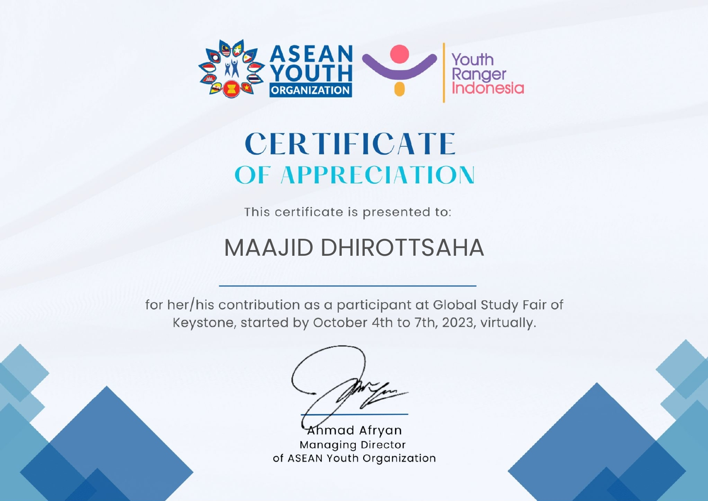
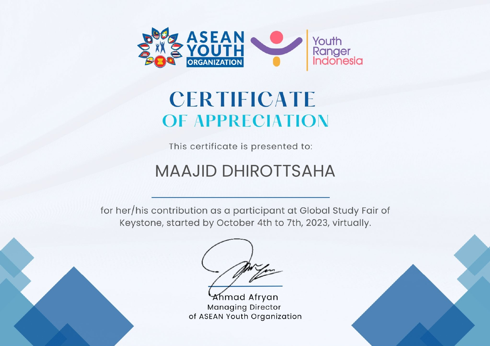

Portofolio Maajid Dhirottsaha
Halo, nama saya Maajid Dhirottsaha, seorang mahasiswa di bidang Teknik Informatika. Ini adalah HTML saya.
Gambar Melayang


About Me
Nama saya Maajid Dhirottsaha, seorang mahasiswa Teknik Informatika yang sedang belajar berbagai hal seputar teknologi, pemrograman, dan pengembangan web. Saya memiliki minat dalam interaksi manusia-komputer dan penerapan teknologi dalam kehidupan sehari-hari.
Saya memiliki soft skill yang kuat dalam bidang editing dan komunikasi, yang telah saya kembangkan dengan tekun selama perjalanan pendidikan saya. Di dunia yang terus berkembang ini, saya selalu antusias untuk menggabungkan pengetahuan teknis saya dengan keterampilan lunak ini untuk menciptakan solusi yang inovatif dan efektif. Selain itu, saya memiliki kemahiran yang tinggi dalam bahasa Inggris, yang memungkinkan saya untuk berkomunikasi dan berkolaborasi secara efektif dalam konteks global.
 

What's New
Halaman ini berisi informasi terbaru dan perkembangan proyek-proyek saya yang sedang berjalan.
Lihat lebih banyak di GitHub saya.
Terima kasih telah mengunjungi portofolio saya. Silakan kunjungi proyek lainnya di GitHub saya.